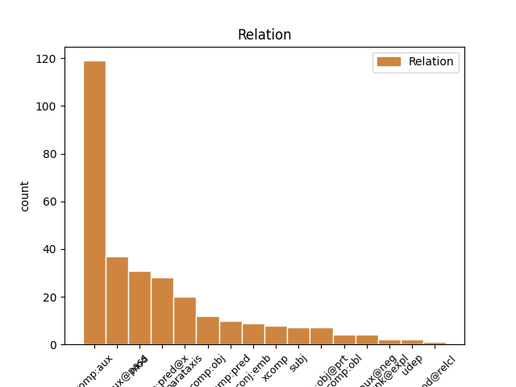
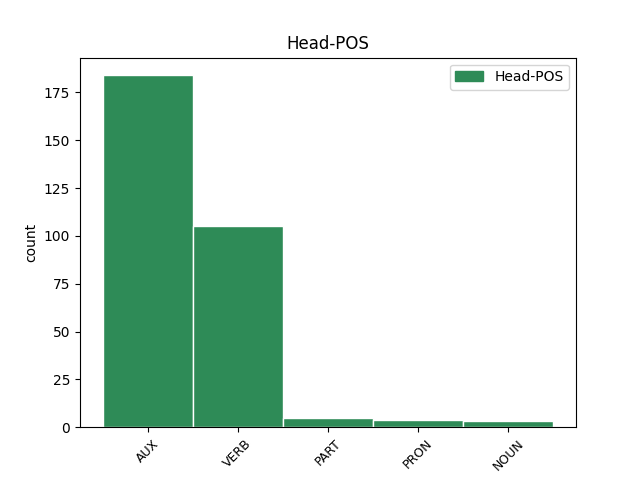
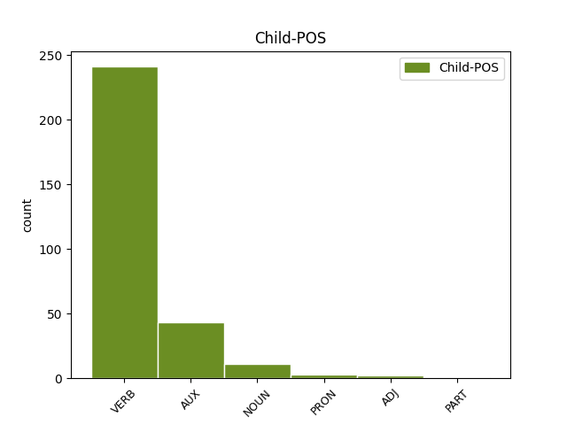

Distribution of features within this leaf



Agreement Rules sorted by frequency.
- When the dependent token is the complement for auxiliary(comp:aux) of the head token, and the head token is AUX and the dependent token is VERB.
1 Gant _ _ _ _ 0 _ _ _
2 e _ _ _ _ 0 _ _ _
3 vignon _ _ _ _ 0 _ _ _
4 doue _ _ _ _ 0 _ _ _
5 e _ _ _ _ 0 _ _ _
6 voe _ AUX _ Mood=Ind|Number=Sing|Person=3|Tense=Past|VerbForm=Fin 0 _ _ _
7 troet _ VERB _ Tense=Past|VerbForm=Part 6 comp:aux _ _
8 en _ _ _ _ 0 _ _ _
9 ur _ _ _ _ 0 _ _ _
10 blokad _ _ _ _ 0 _ _ _
11 rezin _ _ _ _ 0 _ _ _
12 , _ _ _ _ 0 _ _ _
13 ha _ _ _ _ 0 _ _ _
14 gant _ _ _ _ 0 _ _ _
15 e _ _ _ _ 0 _ _ _
16 wad _ _ _ _ 0 _ _ _
17 e _ _ _ _ 0 _ _ _
18 krouas _ _ _ _ 0 _ _ _
19 ar _ _ _ _ 0 _ _ _
20 gwin _ _ _ _ 0 _ _ _
21 . _ _ _ _ 0 _ _ _
1 E _ _ _ _ 0 _ _ _
2 1992 _ _ _ _ 0 _ _ _
3 e _ _ _ _ 0 _ _ _
4 voe _ AUX _ Mood=Ind|Number=Sing|Person=3|Tense=Past|VerbForm=Fin 0 _ _ _
5 pedet pede VERB _ Tense=Past|VerbForm=Part 4 comp:aux@pass _ _
6 da _ _ _ _ 0 _ _ _
7 c'houel _ _ _ _ 0 _ _ _
8 an _ _ _ _ 0 _ _ _
9 transmusicales _ _ _ _ 0 _ _ _
10 e _ _ _ _ 0 _ _ _
11 Roazhon _ _ _ _ 0 _ _ _
12 ha _ _ _ _ 0 _ _ _
13 kanañ _ _ _ _ 0 _ _ _
14 a _ _ _ _ 0 _ _ _
15 reas _ _ _ _ 0 _ _ _
16 e _ _ _ _ 0 _ _ _
17 - _ _ _ _ 0 _ _ _
18 unan _ _ _ _ 0 _ _ _
19 a _ _ _ _ 0 _ _ _
20 capella _ _ _ _ 0 _ _ _
21 etre _ _ _ _ 0 _ _ _
22 ur _ _ _ _ 0 _ _ _
23 strollad _ _ _ _ 0 _ _ _
24 rock _ _ _ _ 0 _ _ _
25 hag _ _ _ _ 0 _ _ _
26 ur _ _ _ _ 0 _ _ _
27 strollad _ _ _ _ 0 _ _ _
28 rap _ _ _ _ 0 _ _ _
29 , _ _ _ _ 0 _ _ _
30 dirak _ _ _ _ 0 _ _ _
31 tud _ _ _ _ 0 _ _ _
32 n'anavezas _ _ _ _ 0 _ _ _
33 netra _ _ _ _ 0 _ _ _
34 diwar _ _ _ _ 0 _ _ _
35 - _ _ _ _ 0 _ _ _
36 benn _ _ _ _ 0 _ _ _
37 ar _ _ _ _ 0 _ _ _
38 c'han _ _ _ _ 0 _ _ _
39 e _ _ _ _ 0 _ _ _
40 brezhoneg _ _ _ _ 0 _ _ _
41 . _ _ _ _ 0 _ _ _
1 Peurvuiañ _ _ _ _ 0 _ _ _
2 e _ _ _ _ 0 _ _ _
3 vez vez VERB _ Form=Ecl|Mood=Ind|Tense=Pres 0 _ _ _
4 savet _ _ _ _ 0 _ _ _
5 an _ _ _ _ 0 _ _ _
6 tourioù _ _ _ _ 0 _ _ _
7 - _ _ _ _ 0 _ _ _
8 tan _ _ _ _ 0 _ _ _
9 war _ _ _ _ 0 _ _ _
10 an _ _ _ _ 0 _ _ _
11 aodoù _ _ _ _ 0 _ _ _
12 evit _ _ _ _ 0 _ _ _
13 ma _ _ _ _ 0 _ _ _
14 c'hellfe _ _ _ _ 0 _ _ _
15 ar _ _ _ _ 0 _ _ _
16 bigi _ _ _ _ 0 _ _ _
17 hag _ _ _ _ 0 _ _ _
18 al _ _ _ _ 0 _ _ _
19 listri _ _ _ _ 0 _ _ _
20 gouzout _ _ _ _ 0 _ _ _
21 e _ _ _ _ 0 _ _ _
22 pelec'h _ _ _ _ 0 _ _ _
23 emañ _ VERB _ Number=Sing|Person=3|Polarity=Neg|Tense=Pres 3 mod _ _
24 an _ _ _ _ 0 _ _ _
25 dañjerioù _ _ _ _ 0 _ _ _
26 : _ _ _ _ 0 _ _ _
27 ( _ _ _ _ 0 _ _ _
28 kerreg _ _ _ _ 0 _ _ _
29 , _ _ _ _ 0 _ _ _
30 bazinier _ _ _ _ 0 _ _ _
31 ) _ _ _ _ 0 _ _ _
32 pe _ _ _ _ 0 _ _ _
33 e _ _ _ _ 0 _ _ _
34 pelech _ _ _ _ 0 _ _ _
35 emañ _ _ _ _ 0 _ _ _
36 ar _ _ _ _ 0 _ _ _
37 porzhioù _ _ _ _ 0 _ _ _
38 . _ _ _ _ 0 _ _ _
1 Hervez _ _ _ _ 0 _ _ _
2 ar _ _ _ _ 0 _ _ _
3 mojennoù _ _ _ _ 0 _ _ _
4 e _ _ _ _ 0 _ _ _
5 teskas teska VERB _ Form=Ecl|Mood=Ind|Tense=Past 0 _ _ _
6 d'an _ _ _ _ 0 _ _ _
7 dud _ _ _ _ 0 _ _ _
8 penaos _ _ _ _ 0 _ _ _
9 labourat _ _ _ _ 0 _ _ _
10 an _ _ _ _ 0 _ _ _
11 douar _ _ _ _ 0 _ _ _
12 hag _ _ _ _ 0 _ _ _
13 e _ _ _ _ 0 _ _ _
14 tilamas _ _ _ _ 0 _ _ _
15 an _ _ _ _ 0 _ _ _
16 antropofagiezh _ _ _ _ 0 _ _ _
17 . _ _ _ _ 0 _ _ _
18 sevel _ _ _ _ 0 _ _ _
19 a _ _ _ _ 0 _ _ _
20 reas _ VERB _ Animacy=Inan|Aspect=Perf|Gender=Masc|Number=Sing|Polarity=Pos|Tense=Past|VerbForm=Part 5 parataxis _ _
21 an _ _ _ _ 0 _ _ _
22 temploù _ _ _ _ 0 _ _ _
23 hag _ _ _ _ 0 _ _ _
24 ar _ _ _ _ 0 _ _ _
25 c'hêrioù _ _ _ _ 0 _ _ _
26 kentañ _ _ _ _ 0 _ _ _
27 . _ _ _ _ 0 _ _ _
1 Bet god VERB _ Number=Sing|Tense=Pres|VerbForm=Fin 0 _ _ _
2 on _ _ _ _ 0 _ _ _
3 er være AUX _ Mood=Ind|Number=Sing|Person=3|Tense=Pres|VerbForm=Fin 1 xcomp _ _
4 c'hloerdi _ _ _ _ 0 _ _ _
5 , _ _ _ _ 0 _ _ _
6 en _ _ _ _ 0 _ _ _
7 arme _ _ _ _ 0 _ _ _
8 , _ _ _ _ 0 _ _ _
1 Pa _ _ _ _ 0 _ _ _
2 oa _ _ _ _ 0 _ _ _
3 bet _ _ _ _ 0 _ _ _
4 savet _ _ _ _ 0 _ _ _
5 ar _ _ _ _ 0 _ _ _
6 vali _ _ _ _ 0 _ _ _
7 e _ _ _ _ 0 _ _ _
8 - _ _ _ _ 0 _ _ _
9 pad _ _ _ _ 0 _ _ _
10 prezidantelezh _ _ _ _ 0 _ _ _
11 Manuel _ _ _ _ 0 _ _ _
12 L. _ _ _ _ 0 _ _ _
13 Quezon _ _ _ _ 0 _ _ _
14 , _ _ _ _ 0 _ _ _
15 e _ _ _ _ 0 _ _ _
16 oa _ AUX _ Form=Ecl|Mood=Ind|Tense=Past 0 _ _ _
17 bet i AUX _ Tense=Past|VerbForm=Part 16 comp:aux _ _
18 anvet _ _ _ _ 0 _ _ _
19 Julio _ _ _ _ 0 _ _ _
20 19 _ _ _ _ 0 _ _ _
21 , _ _ _ _ 0 _ _ _
22 diwar _ _ _ _ 0 _ _ _
23 deizad _ _ _ _ 0 _ _ _
24 ganedigezh _ _ _ _ 0 _ _ _
25 an _ _ _ _ 0 _ _ _
26 haroz _ _ _ _ 0 _ _ _
27 broadel _ _ _ _ 0 _ _ _
28 Jose _ _ _ _ 0 _ _ _
29 Rizal _ _ _ _ 0 _ _ _
30 . _ _ _ _ 0 _ _ _
1 Splann splann VERB _ Mood=Ind|Tense=Pres 0 _ _ _
2 e _ _ _ _ 0 _ _ _
3 weler weler VERB _ Mood=Ind|Tense=Pres 1 comp:obj _ _
4 an _ _ _ _ 0 _ _ _
5 Nil _ _ _ _ 0 _ _ _
6 eus _ _ _ _ 0 _ _ _
7 an _ _ _ _ 0 _ _ _
8 egor _ _ _ _ 0 _ _ _
9 , _ _ _ _ 0 _ _ _
10 anezhañ _ _ _ _ 0 _ _ _
11 un _ _ _ _ 0 _ _ _
12 draoñienn _ _ _ _ 0 _ _ _
13 c'hlas _ _ _ _ 0 _ _ _
14 e _ _ _ _ 0 _ _ _
15 - _ _ _ _ 0 _ _ _
16 kreiz _ _ _ _ 0 _ _ _
17 an _ _ _ _ 0 _ _ _
18 dezerzh _ _ _ _ 0 _ _ _
19 . _ _ _ _ 0 _ _ _
1 E _ _ _ _ 0 _ _ _
2 1812 _ _ _ _ 0 _ _ _
3 voe _ VERB _ Mood=Ind|Number=Sing|Person=3|Tense=Past|VerbForm=Fin 0 _ _ _
4 rannet _ VERB _ Tense=Past|VerbForm=Part 3 comp:pred@x _ _
5 e _ _ _ _ 0 _ _ _
6 3 _ _ _ _ 0 _ _ _
7 arondisamant _ _ _ _ 0 _ _ _
8 : _ _ _ _ 0 _ _ _
1 Liammet liammet VERB _ Mood=Ind|Tense=Pres 0 _ _ _
2 - _ _ _ _ 0 _ _ _
3 strizh _ _ _ _ 0 _ _ _
4 emañ _ VERB _ Number=Sing|Person=3|Polarity=Neg|Tense=Pres 1 comp:obl _ _
5 ouzh _ _ _ _ 0 _ _ _
6 sothoeg _ _ _ _ 0 _ _ _
7 an _ _ _ _ 0 _ _ _
8 norzh _ _ _ _ 0 _ _ _
9 ha _ _ _ _ 0 _ _ _
10 sothoeg _ _ _ _ 0 _ _ _
11 ar _ _ _ _ 0 _ _ _
12 Su _ _ _ _ 0 _ _ _
13 . _ _ _ _ 0 _ _ _
1 War _ _ _ _ 0 _ _ _
2 - _ _ _ _ 0 _ _ _
3 e _ _ _ _ 0 _ _ _
4 - _ _ _ _ 0 _ _ _
5 lerc'h _ _ _ _ 0 _ _ _
6 en _ _ _ _ 0 _ _ _
7 - _ _ _ _ 0 _ _ _
8 defe _ _ _ _ 0 _ _ _
9 redet redet VERB _ Mood=Ind|Number=Plur|Person=3|Tense=Pres|VerbForm=Fin 0 _ _ _
10 Sant _ _ _ _ 0 _ _ _
11 - _ _ _ _ 0 _ _ _
12 Kadog _ _ _ _ 0 _ _ _
13 goude _ _ _ _ 0 _ _ _
14 m'en _ _ _ _ 0 _ _ _
15 - _ _ _ _ 0 _ _ _
16 doa doa AUX _ Mood=Ind|Number=Sing|Person=1|Tense=Pres|VerbForm=Fin 9 mod _ _
17 laeret _ _ _ _ 0 _ _ _
18 boued _ _ _ _ 0 _ _ _
19 . _ _ _ _ 0 _ _ _
1 63 _ _ _ _ 0 _ _ _
2 loarenn _ _ _ _ 0 _ _ _
3 a _ _ _ _ 0 _ _ _
4 zo _ _ _ _ 0 _ _ _
5 bet _ _ _ _ 0 _ _ _
6 renablet _ _ _ _ 0 _ _ _
7 betek _ _ _ _ 0 _ _ _
8 - _ _ _ _ 0 _ _ _
9 henn _ _ _ _ 0 _ _ _
10 , _ _ _ _ 0 _ _ _
11 darn _ _ _ _ 0 _ _ _
12 a _ _ _ _ 0 _ _ _
13 zo _ _ _ _ 0 _ _ _
14 bras _ _ _ _ 0 _ _ _
15 ha haver AUX _ Mood=Ind|Number=Sing|Person=3|Tense=Pres|VerbForm=Fin 0 _ _ _
16 dizoloet _ _ _ _ 0 _ _ _
17 int _ _ _ _ 0 _ _ _
18 bet _ _ _ _ 0 _ _ _
19 abaoe _ _ _ _ 0 _ _ _
20 pell _ _ _ _ 0 _ _ _
21 ( _ _ _ _ 0 _ _ _
22 graet _ _ _ _ 0 _ _ _
23 e _ _ _ _ 0 _ _ _
24 vez _ _ _ _ 0 _ _ _
25 al _ _ _ _ 0 _ _ _
26 loarennoù _ _ _ _ 0 _ _ _
27 galilean _ _ _ _ 0 _ _ _
28 eus _ _ _ _ 0 _ _ _
29 ar _ _ _ _ 0 _ _ _
30 peder _ _ _ _ 0 _ _ _
31 vrasañ _ _ _ _ 0 _ _ _
32 ) _ _ _ _ 0 _ _ _
33 , _ _ _ _ 0 _ _ _
34 ha _ _ _ _ 0 _ _ _
35 darn _ _ _ _ 0 _ _ _
36 all _ _ _ _ 0 _ _ _
37 a _ _ _ _ 0 _ _ _
38 zo _ _ _ _ 0 _ _ _
39 bihan _ _ _ _ 0 _ _ _
40 ha ha AUX _ Mood=Ind|Number=Sing|Person=3|Tense=Pres|VerbForm=Fin 15 conj:emb _ _
41 dizoloet _ _ _ _ 0 _ _ _
42 int _ _ _ _ 0 _ _ _
43 bet _ _ _ _ 0 _ _ _
44 nevez _ _ _ _ 0 _ _ _
45 ' _ _ _ _ 0 _ _ _
46 zo _ _ _ _ 0 _ _ _
47 . _ _ _ _ 0 _ _ _
1 E _ _ _ _ 0 _ _ _
2 1563 _ _ _ _ 0 _ _ _
3 e _ _ _ _ 0 _ _ _
4 voe _ _ _ _ 0 _ _ _
5 anvet _ _ _ _ 0 _ _ _
6 Giorgio _ _ _ _ 0 _ _ _
7 Blandrata _ _ _ _ 0 _ _ _
8 da _ _ _ _ 0 _ _ _
9 vezeg _ _ _ _ 0 _ _ _
10 al _ _ _ _ 0 _ _ _
11 lez _ _ _ _ 0 _ _ _
12 ha _ _ _ _ 0 _ _ _
13 levezonet _ VERB _ Tense=Past|VerbForm=Part 15 comp:aux _ _
14 e _ _ _ _ 0 _ _ _
15 voe _ VERB _ Mood=Ind|Number=Sing|Person=3|Tense=Past|VerbForm=Fin 0 _ _ _
16 muioc'h _ _ _ _ 0 _ _ _
17 - _ _ _ _ 0 _ _ _
18 mui _ _ _ _ 0 _ _ _
19 gant _ _ _ _ 0 _ _ _
20 ar _ _ _ _ 0 _ _ _
21 mennozhioù _ _ _ _ 0 _ _ _
22 relijiel _ _ _ _ 0 _ _ _
23 taer _ _ _ _ 0 _ _ _
24 prezeget _ _ _ _ 0 _ _ _
25 gantañ _ _ _ _ 0 _ _ _
26 speredoù _ _ _ _ 0 _ _ _
27 ar _ _ _ _ 0 _ _ _
28 roue _ _ _ _ 0 _ _ _
29 yaouank _ _ _ _ 0 _ _ _
30 Yann _ _ _ _ 0 _ _ _
31 II _ _ _ _ 0 _ _ _
32 hag _ _ _ _ 0 _ _ _
33 an _ _ _ _ 0 _ _ _
34 eskob _ _ _ _ 0 _ _ _
35 kalvinat _ _ _ _ 0 _ _ _
36 Frañsez _ _ _ _ 0 _ _ _
37 David _ _ _ _ 0 _ _ _
38 . _ _ _ _ 0 _ _ _
1 Eno _ _ _ _ 0 _ _ _
2 en _ _ _ _ 0 _ _ _
3 em _ PRON _ Aspect=Imp|Mood=Ind|Number=Sing|Person=1|Tense=Pres|Variant=Long|VerbForm=Fin 0 _ _ _
4 gavas _ VERB _ Aspect=Imp|Mood=Ind|Number=Sing|Person=2|Tense=Pres|VerbForm=Fin 3 comp:aux@neg _ _
5 gant _ _ _ _ 0 _ _ _
6 Vladimir _ _ _ _ 0 _ _ _
7 Poutin _ _ _ _ 0 _ _ _
8 . _ _ _ _ 0 _ _ _
1 Meret meret VERB _ Mood=Ind|Tense=Pres 0 _ _ _
2 e _ _ _ _ 0 _ _ _
3 vez vez NOUN _ Aspect=Hab|Mood=Ind|Number=Sing|Person=3|Polarity=Pos|Tense=Pres 1 subj _ _
4 gant _ _ _ _ 0 _ _ _
5 al _ _ _ _ 0 _ _ _
6 live _ _ _ _ 0 _ _ _
7 - _ _ _ _ 0 _ _ _
8 se _ _ _ _ 0 _ _ _
9 ivez _ _ _ _ 0 _ _ _
10 ar _ _ _ _ 0 _ _ _
11 c'hehentiñ _ _ _ _ 0 _ _ _
12 etre _ _ _ _ 0 _ _ _
13 an _ _ _ _ 0 _ _ _
14 arloadoù _ _ _ _ 0 _ _ _
15 evel _ _ _ _ 0 _ _ _
16 ar _ _ _ _ 0 _ _ _
17 posteloù _ _ _ _ 0 _ _ _
18 , _ _ _ _ 0 _ _ _
19 an _ _ _ _ 0 _ _ _
20 treuzkas _ _ _ _ 0 _ _ _
21 teulioù _ _ _ _ 0 _ _ _
22 ha _ _ _ _ 0 _ _ _
23 kement _ _ _ _ 0 _ _ _
24 zo _ _ _ _ 0 _ _ _
25 ... _ _ _ _ 0 _ _ _
1 Gwelet gwelet VERB _ Mood=Ind|Tense=Pres 0 _ _ _
2 e _ _ _ _ 0 _ _ _
3 vez vez NOUN _ Aspect=Hab|Mood=Ind|Number=Sing|Person=3|Polarity=Pos|Tense=Pres 1 comp:obj _ _
4 c'hoazh _ _ _ _ 0 _ _ _
5 e _ _ _ _ 0 _ _ _
6 broioù _ _ _ _ 0 _ _ _
7 ' _ _ _ _ 0 _ _ _
8 zo _ _ _ _ 0 _ _ _
9 met _ _ _ _ 0 _ _ _
10 n'eo _ _ _ _ 0 _ _ _
11 ket _ _ _ _ 0 _ _ _
12 anavet _ _ _ _ 0 _ _ _
13 ent _ _ _ _ 0 _ _ _
14 - _ _ _ _ 0 _ _ _
15 ofisiel _ _ _ _ 0 _ _ _
16 gant _ _ _ _ 0 _ _ _
17 ar _ _ _ _ 0 _ _ _
18 BIPM _ _ _ _ 0 _ _ _
19 . _ _ _ _ 0 _ _ _
1 Meur _ _ _ _ 0 _ _ _
2 a _ _ _ _ 0 _ _ _
3 delwenn _ _ _ _ 0 _ _ _
4 ha _ _ _ _ 0 _ _ _
5 meur _ _ _ _ 0 _ _ _
6 a _ _ _ _ 0 _ _ _
7 livadur _ _ _ _ 0 _ _ _
8 a _ _ _ _ 0 _ _ _
9 voe _ AUX _ Mood=Ind|Number=Sing|Person=3|Tense=Past|VerbForm=Fin 0 _ _ _
10 graet _ _ _ _ 0 _ _ _
11 gant _ _ _ _ 0 _ _ _
12 an _ _ _ _ 0 _ _ _
13 arzourien _ _ _ _ 0 _ _ _
14 ken _ _ _ _ 0 _ _ _
15 e _ _ _ _ 0 _ _ _
16 oa is AUX _ Form=Ecl|Mood=Ind|Tense=Past 9 mod _ _
17 ral _ _ _ _ 0 _ _ _
18 an _ _ _ _ 0 _ _ _
19 ilizoù _ _ _ _ 0 _ _ _
20 hep _ _ _ _ 0 _ _ _
21 un _ _ _ _ 0 _ _ _
22 aoter _ _ _ _ 0 _ _ _
23 gouestlet _ _ _ _ 0 _ _ _
24 d'ar _ _ _ _ 0 _ _ _
25 santez _ _ _ _ 0 _ _ _
26 . _ _ _ _ 0 _ _ _
1 Skrivet _ _ _ _ 0 _ _ _
2 ha haver AUX _ Mood=Ind|Number=Sing|Person=3|Tense=Pres|VerbForm=Fin 0 _ _ _
3 savet _ _ _ _ 0 _ _ _
4 en _ _ _ _ 0 _ _ _
5 deus _ _ _ _ 0 _ _ _
6 meur _ _ _ _ 0 _ _ _
7 a _ _ _ _ 0 _ _ _
8 bezh _ _ _ _ 0 _ _ _
9 - _ _ _ _ 0 _ _ _
10 c'hoari _ _ _ _ 0 _ _ _
11 e _ _ _ _ 0 _ _ _
12 galleg _ _ _ _ 0 _ _ _
13 hag _ _ _ _ 0 _ _ _
14 e _ _ _ _ 0 _ _ _
15 brezhoneg _ _ _ _ 0 _ _ _
16 ha haver AUX _ Mood=Ind|Number=Sing|Person=3|Tense=Pres|VerbForm=Fin 2 parataxis _ _
17 kaset _ _ _ _ 0 _ _ _
18 en _ _ _ _ 0 _ _ _
19 deus _ _ _ _ 0 _ _ _
20 ur _ _ _ _ 0 _ _ _
21 pezh _ _ _ _ 0 _ _ _
22 - _ _ _ _ 0 _ _ _
23 mell _ _ _ _ 0 _ _ _
24 labour _ _ _ _ 0 _ _ _
25 evit _ _ _ _ 0 _ _ _
26 brudañ _ _ _ _ 0 _ _ _
27 ar _ _ _ _ 0 _ _ _
28 c'hoariva _ _ _ _ 0 _ _ _
29 er _ _ _ _ 0 _ _ _
30 skolioù _ _ _ _ 0 _ _ _
31 . _ _ _ _ 0 _ _ _
1 Esaet _ _ _ _ 0 _ _ _
2 e _ _ _ _ 0 _ _ _
3 vezont vezo VERB _ Mood=Ind|Number=Plur|Person=3|Tense=Pres|VerbForm=Fin 0 _ _ _
4 pe _ _ _ _ 0 _ _ _
5 er fi AUX _ Mood=Ind|Number=Sing|Person=3|Tense=Pres|VerbForm=Fin 3 udep _ _
6 ribouloù _ _ _ _ 0 _ _ _
7 - _ _ _ _ 0 _ _ _
8 avel _ _ _ _ 0 _ _ _
9 pe _ _ _ _ 0 _ _ _
10 en _ _ _ _ 0 _ _ _
11 aergelc'h _ _ _ _ 0 _ _ _
12 digor _ _ _ _ 0 _ _ _
13 . _ _ _ _ 0 _ _ _
1 Lec’hioù _ _ _ _ 0 _ _ _
2 ' _ _ _ _ 0 _ _ _
3 zo _ _ _ _ 0 _ _ _
4 e _ _ _ _ 0 _ _ _
5 - _ _ _ _ 0 _ _ _
6 giz giz NOUN _ Mood=Ind|Number=Sing|Person=1|Tense=Pres|VerbForm=Fin 0 _ _ _
7 Ledenez _ _ _ _ 0 _ _ _
8 Kiberen _ _ _ _ 0 _ _ _
9 pe _ _ _ _ 0 _ _ _
10 ar _ _ _ _ 0 _ _ _
11 Gerveur _ _ _ _ 0 _ _ _
12 a _ _ _ _ 0 _ _ _
13 zo _ _ _ _ 0 _ _ _
14 brav _ _ _ _ 0 _ _ _
15 - _ _ _ _ 0 _ _ _
16 eston eston NOUN _ Mood=Ind|Number=Sing|Person=1|Tense=Pres|VerbForm=Fin 6 mod _ _
17 o _ _ _ _ 0 _ _ _
18 hin _ _ _ _ 0 _ _ _
19 ( _ _ _ _ 0 _ _ _
20 mikro _ _ _ _ 0 _ _ _
21 - _ _ _ _ 0 _ _ _
22 hin _ _ _ _ 0 _ _ _
23 ) _ _ _ _ 0 _ _ _
24 . _ _ _ _ 0 _ _ _
1 Skrivet _ _ _ _ 0 _ _ _
2 e e AUX _ Mood=Ind|Number=Sing|Person=3|Tense=Pres|VerbForm=Fin 0 _ _ _
3 vez vez NOUN _ Aspect=Hab|Mood=Ind|Number=Sing|Person=3|Polarity=Pos|Tense=Pres 2 subj _ _
4 gant _ _ _ _ 0 _ _ _
5 un _ _ _ _ 0 _ _ _
6 doare _ _ _ _ 0 _ _ _
7 - _ _ _ _ 0 _ _ _
8 skrivañ _ _ _ _ 0 _ _ _
9 ispisial _ _ _ _ 0 _ _ _
10 , _ _ _ _ 0 _ _ _
11 ar _ _ _ _ 0 _ _ _
12 skritur _ _ _ _ 0 _ _ _
13 kannadek _ _ _ _ 0 _ _ _
14 . _ _ _ _ 0 _ _ _
1 Mont _ _ _ _ 0 _ _ _
2 war _ _ _ _ 0 _ _ _
3 diskenn _ _ _ _ 0 _ _ _
4 a _ _ _ _ 0 _ _ _
5 reas reas VERB _ Form=Len|Mood=Ind|Tense=Past 0 _ _ _
6 an _ _ _ _ 0 _ _ _
7 niver _ _ _ _ 0 _ _ _
8 a _ _ _ _ 0 _ _ _
9 dud _ _ _ _ 0 _ _ _
10 a _ _ _ _ 0 _ _ _
11 rae _ _ _ _ 0 _ _ _
12 gant _ _ _ _ 0 _ _ _
13 ar _ _ _ _ 0 _ _ _
14 yezh _ _ _ _ 0 _ _ _
15 adal _ _ _ _ 0 _ _ _
16 ar _ _ _ _ 0 _ _ _
17 bloavezhioù _ _ _ _ 0 _ _ _
18 1930 _ _ _ _ 0 _ _ _
19 hag _ _ _ _ 0 _ _ _
20 er _ _ _ _ 0 _ _ _
21 bloavezhioù _ _ _ _ 0 _ _ _
22 1980 _ _ _ _ 0 _ _ _
23 ne _ _ _ _ 0 _ _ _
24 veze _ AUX _ Form=Ecl|Mood=Ind|Tense=Past 5 comp:obl _ _
25 ket _ _ _ _ 0 _ _ _
26 kelennet _ _ _ _ 0 _ _ _
27 e _ _ _ _ 0 _ _ _
28 skolioù _ _ _ _ 0 _ _ _
29 ar _ _ _ _ 0 _ _ _
30 c'herioù _ _ _ _ 0 _ _ _
31 bras _ _ _ _ 0 _ _ _
32 . _ _ _ _ 0 _ _ _
1 Eno eno PRON _ Case=Gen|Degree=Pos|Number=Plur|Tense=Pres|VerbForm=Part|Voice=Act 2 subj _ _
2 e fi AUX _ Mood=Ind|Number=Sing|Person=3|Tense=Pres|VerbForm=Fin 0 _ _ _
3 varvas _ _ _ _ 0 _ _ _
4 d’ar _ _ _ _ 0 _ _ _
5 14 _ _ _ _ 0 _ _ _
6 a _ _ _ _ 0 _ _ _
7 viz _ _ _ _ 0 _ _ _
8 C’hwevrer _ _ _ _ 0 _ _ _
9 1779 _ _ _ _ 0 _ _ _
10 , _ _ _ _ 0 _ _ _
11 e _ _ _ _ 0 _ _ _
12 Bae _ _ _ _ 0 _ _ _
13 Kealakukea _ _ _ _ 0 _ _ _
14 . _ _ _ _ 0 _ _ _
1 Graet _ _ _ _ 0 _ _ _
2 e e PART _ Tense=Pres|VerbForm=Cop 0 _ _ _
3 vez vez NOUN _ Form=Ecl|Mood=Ind|Tense=Pres 2 subj _ _
4 ivez _ _ _ _ 0 _ _ _
5 gant _ _ _ _ 0 _ _ _
6 an _ _ _ _ 0 _ _ _
7 termen _ _ _ _ 0 _ _ _
8 " _ _ _ _ 0 _ _ _
9 krennenn _ _ _ _ 0 _ _ _
10 " _ _ _ _ 0 _ _ _
11 da _ _ _ _ 0 _ _ _
12 envel _ _ _ _ 0 _ _ _
13 ar _ _ _ _ 0 _ _ _
14 fun _ _ _ _ 0 _ _ _
15 gevahel _ _ _ _ 0 _ _ _
16 . _ _ _ _ 0 _ _ _
1 Rannet _ _ _ _ 0 _ _ _
2 e e AUX _ Tense=Pres|VerbForm=Cop 3 comp:pred _ _
3 vez vez VERB _ Form=Ecl|Mood=Ind|Tense=Pres 0 _ _ _
4 anezhañ _ _ _ _ 0 _ _ _
5 dre _ _ _ _ 0 _ _ _
6 97 _ _ _ _ 0 _ _ _
7 da _ _ _ _ 0 _ _ _
8 gentañ _ _ _ _ 0 _ _ _
9 . _ _ _ _ 0 _ _ _
1 Kavet _ _ _ _ 0 _ _ _
2 e _ _ _ _ 0 _ _ _
3 vez vez VERB _ Mood=Ind|Tense=Pres 0 _ _ _
4 a _ _ _ _ 0 _ _ _
5 - _ _ _ _ 0 _ _ _
6 hed _ _ _ _ 0 _ _ _
7 an _ _ _ _ 0 _ _ _
8 aod _ _ _ _ 0 _ _ _
9 , _ _ _ _ 0 _ _ _
10 dindan _ _ _ _ 0 _ _ _
11 ar _ _ _ _ 0 _ _ _
12 mor _ _ _ _ 0 _ _ _
13 , _ _ _ _ 0 _ _ _
14 er _ _ _ _ 0 _ _ _
15 dourredennoù dourrede NOUN _ Mood=Ind|Tense=Pres 3 udep _ _
16 ha _ _ _ _ 0 _ _ _
17 e _ _ _ _ 0 _ _ _
18 lec'hioù'zo _ _ _ _ 0 _ _ _
19 war _ _ _ _ 0 _ _ _
20 an _ _ _ _ 0 _ _ _
21 douar _ _ _ _ 0 _ _ _
22 . _ _ _ _ 0 _ _ _
1 Kaset _ _ _ _ 0 _ _ _
2 e _ _ _ _ 0 _ _ _
3 voent _ VERB _ Gender=Fem,Masc|HebBinyan=HITPAEL|Number=Plur|Person=3|Tense=Past 0 _ _ _
4 neuze _ _ _ _ 0 _ _ _
5 da _ _ _ _ 0 _ _ _
6 gamp _ _ _ _ 0 _ _ _
7 Westerbork _ _ _ _ 0 _ _ _
8 da _ _ _ _ 0 _ _ _
9 gentañ _ _ _ _ 0 _ _ _
10 , _ _ _ _ 0 _ _ _
11 ha _ _ _ _ 0 _ _ _
12 d'an _ _ _ _ 0 _ _ _
13 21 _ _ _ _ 0 _ _ _
14 a _ _ _ _ 0 _ _ _
15 viz _ _ _ _ 0 _ _ _
16 Gwengolo _ _ _ _ 0 _ _ _
17 e _ _ _ _ 0 _ _ _
18 voent _ VERB _ Gender=Fem,Masc|HebBinyan=HITPAEL|Number=Plur|Person=3|Tense=Past 3 conj:emb _ _
19 lakaet _ _ _ _ 0 _ _ _
20 en _ _ _ _ 0 _ _ _
21 tren _ _ _ _ 0 _ _ _
22 diwezhañ _ _ _ _ 0 _ _ _
23 war _ _ _ _ 0 _ _ _
24 - _ _ _ _ 0 _ _ _
25 du _ _ _ _ 0 _ _ _
26 Auschwitz _ _ _ _ 0 _ _ _
27 . _ _ _ _ 0 _ _ _
1 Erru _ _ _ _ 0 _ _ _
2 Aegisthus _ _ _ _ 0 _ _ _
3 en _ _ _ _ 0 _ _ _
4 oad _ _ _ _ 0 _ _ _
5 - _ _ _ _ 0 _ _ _
6 gour _ _ _ _ 0 _ _ _
7 e _ _ _ _ 0 _ _ _
8 voe voe AUX _ Gender=Masc|Number=Sing|Person=3|Tense=Past 0 _ _ _
9 lavaret _ _ _ _ 0 _ _ _
10 dezhañ _ _ _ _ 0 _ _ _
11 gant _ _ _ _ 0 _ _ _
12 Thyestes _ _ _ _ 0 _ _ _
13 e _ _ _ _ 0 _ _ _
14 oa _ VERB _ Form=Ecl|Mood=Ind|Tense=Past 8 mod _ _
15 tad _ _ _ _ 0 _ _ _
16 ha _ _ _ _ 0 _ _ _
17 tad _ _ _ _ 0 _ _ _
18 - _ _ _ _ 0 _ _ _
19 kozh _ _ _ _ 0 _ _ _
20 dezhañ _ _ _ _ 0 _ _ _
21 war _ _ _ _ 0 _ _ _
22 un _ _ _ _ 0 _ _ _
23 dro _ _ _ _ 0 _ _ _
24 . _ _ _ _ 0 _ _ _
1 Pemp _ _ _ _ 0 _ _ _
2 tonenn _ _ _ _ 0 _ _ _
3 disheñvel _ _ _ _ 0 _ _ _
4 ez _ _ _ _ 0 _ _ _
5 eus eus PRON _ Tense=Pres|VerbForm=Cop 0 _ _ _
6 er er AUX _ Tense=Pres|VerbForm=Cop 5 comp:pred _ _
7 c'houngeg _ _ _ _ 0 _ _ _
8 ivez _ _ _ _ 0 _ _ _
9 . _ _ _ _ 0 _ _ _
1 Serret _ _ _ _ 0 _ _ _
2 em _ _ _ _ 0 _ _ _
3 eus _ _ _ _ 0 _ _ _
4 da _ _ _ _ 0 _ _ _
5 eskern _ _ _ _ 0 _ _ _
6 , _ _ _ _ 0 _ _ _
7 ha haver AUX _ Mood=Ind|Number=Sing|Person=3|Tense=Pres|VerbForm=Fin 0 _ _ _
8 bodet _ _ _ _ 0 _ _ _
9 em em PRON _ Aspect=Imp|Mood=Ind|Number=Sing|Person=1|Tense=Pres|Variant=Long|VerbForm=Fin 7 unk@expl _ _
10 eus _ _ _ _ 0 _ _ _
11 da _ _ _ _ 0 _ _ _
12 izili _ _ _ _ 0 _ _ _
13 en _ _ _ _ 0 _ _ _
14 - _ _ _ _ 0 _ _ _
15 dro _ _ _ _ 0 _ _ _
16 . _ _ _ _ 0 _ _ _
1 Mangaka _ _ _ _ 0 _ _ _
2 e e AUX _ Tense=Pres|VerbForm=Cop 0 _ _ _
3 vez vez AUX _ Form=Ecl|Mood=Ind|Tense=Pres 2 comp:aux@pass _ _
4 graet _ _ _ _ 0 _ _ _
5 eus _ _ _ _ 0 _ _ _
6 an _ _ _ _ 0 _ _ _
7 dresadennerien _ _ _ _ 0 _ _ _
8 manga _ _ _ _ 0 _ _ _
9 . _ _ _ _ 0 _ _ _
1 Ma _ _ _ _ 0 _ _ _
2 ' _ _ _ _ 0 _ _ _
3 m _ PART _ Aspect=Imp|Mood=Ind|Number=Sing|Person=1|Tense=Pres|Variant=Short|VerbForm=Fin 0 _ _ _
4 bije _ AUX _ Mood=Ind|Number=Sing|Person=2|Tense=Pres|VerbForm=Fin|Voice=Mid 3 comp:aux@neg _ _
5 gouezet _ _ _ _ 0 _ _ _
6 un _ _ _ _ 0 _ _ _
7 hanter _ _ _ _ 0 _ _ _
8 pe _ _ _ _ 0 _ _ _
9 un _ _ _ _ 0 _ _ _
10 drederenn _ _ _ _ 0 _ _ _
11 memes _ _ _ _ 0 _ _ _
12 eus _ _ _ _ 0 _ _ _
13 ar _ _ _ _ 0 _ _ _
14 pezh _ _ _ _ 0 _ _ _
15 a _ _ _ _ 0 _ _ _
16 oa _ _ _ _ 0 _ _ _
17 da _ _ _ _ 0 _ _ _
18 zegouezhout _ _ _ _ 0 _ _ _
19 ganin _ _ _ _ 0 _ _ _
20 , _ _ _ _ 0 _ _ _
21 ne _ _ _ _ 0 _ _ _
22 vije _ _ _ _ 0 _ _ _
23 ket _ _ _ _ 0 _ _ _
24 bet _ _ _ _ 0 _ _ _
25 va _ _ _ _ 0 _ _ _
26 c'halon _ _ _ _ 0 _ _ _
27 ken _ _ _ _ 0 _ _ _
28 joaius _ _ _ _ 0 _ _ _
29 pe _ _ _ _ 0 _ _ _
30 ken _ _ _ _ 0 _ _ _
31 kalonek _ _ _ _ 0 _ _ _
32 hag _ _ _ _ 0 _ _ _
33 ez _ _ _ _ 0 _ _ _
34 oa _ _ _ _ 0 _ _ _
35 e _ _ _ _ 0 _ _ _
36 penn _ _ _ _ 0 _ _ _
37 - _ _ _ _ 0 _ _ _
38 kentañ _ _ _ _ 0 _ _ _
39 va _ _ _ _ 0 _ _ _
40 buhez _ _ _ _ 0 _ _ _
41 . _ _ _ _ 0 _ _ _
42 " _ _ _ _ 0 _ _ _
1 Neuze _ _ _ _ 0 _ _ _
2 en _ _ _ _ 0 _ _ _
3 em _ PRON _ Aspect=Imp|Mood=Ind|Number=Sing|Person=1|Tense=Pres|Variant=Long|VerbForm=Fin 4 unk@expl _ _
4 baras _ VERB _ Mood=Ind|Number=Plur|Person=3|Tense=Pres|VerbForm=Fin 0 _ _ _
5 gantañ _ _ _ _ 0 _ _ _
6 da _ _ _ _ 0 _ _ _
7 c'henel _ _ _ _ 0 _ _ _
8 bugale _ _ _ _ 0 _ _ _
9 . _ _ _ _ 0 _ _ _
1 Evit _ _ _ _ 0 _ _ _
2 Nanak _ _ _ _ 0 _ _ _
3 , _ _ _ _ 0 _ _ _
4 a _ _ _ _ 0 _ _ _
5 grede grede VERB _ Mood=Ind|Number=Sing|Person=3|Tense=Pres|VerbForm=Fin 0 _ _ _
6 en _ _ _ _ 0 _ _ _
7 rāj _ _ _ _ 0 _ _ _
8 maiṁ _ _ _ _ 0 _ _ _
9 jōg _ _ _ _ 0 _ _ _
10 ( _ _ _ _ 0 _ _ _
11 diseblanted _ _ _ _ 0 _ _ _
12 er være AUX _ Mood=Ind|Number=Sing|Person=3|Tense=Pres|VerbForm=Fin 5 parataxis _ _
13 vuhez _ _ _ _ 0 _ _ _
14 vedel _ _ _ _ 0 _ _ _
15 ) _ _ _ _ 0 _ _ _
16 , _ _ _ _ 0 _ _ _
17 ne _ _ _ _ 0 _ _ _
18 oant _ _ _ _ 0 _ _ _
19 ket _ _ _ _ 0 _ _ _
20 barrek _ _ _ _ 0 _ _ _
21 da _ _ _ _ 0 _ _ _
22 vont _ _ _ _ 0 _ _ _
23 da _ _ _ _ 0 _ _ _
24 c'hurued _ _ _ _ 0 _ _ _
25 . _ _ _ _ 0 _ _ _
1 Lazhet _ _ _ _ 0 _ _ _
2 e _ _ _ _ 0 _ _ _
3 oa _ AUX _ Form=Ecl|Mood=Ind|Tense=Past 4 comp:aux _ _
4 bet bet VERB _ Tense=Past|VerbForm=Part 0 _ _ _
5 Yezekael _ _ _ _ 0 _ _ _
6 en _ _ _ _ 0 _ _ _
7 degouezh _ _ _ _ 0 _ _ _
8 - _ _ _ _ 0 _ _ _
9 se _ _ _ _ 0 _ _ _
10 ha _ _ _ _ 0 _ _ _
11 Alan _ _ _ _ 0 _ _ _
12 a _ _ _ _ 0 _ _ _
13 chomas _ _ _ _ 0 _ _ _
14 roue _ _ _ _ 0 _ _ _
15 Breizh _ _ _ _ 0 _ _ _
16 nemetañ _ _ _ _ 0 _ _ _
17 . _ _ _ _ 0 _ _ _
1 Kreizenn _ _ _ _ 0 _ _ _
2 bolitikel _ _ _ _ 0 _ _ _
3 Dakia _ _ _ _ 0 _ _ _
4 e e AUX _ Tense=Pres|VerbForm=Cop 0 _ _ _
5 oa is AUX _ Tense=Pres|VerbForm=Cop 4 subj _ _
6 an _ _ _ _ 0 _ _ _
7 takad _ _ _ _ 0 _ _ _
8 a _ _ _ _ 0 _ _ _
9 anavezomp _ _ _ _ 0 _ _ _
10 bremañ _ _ _ _ 0 _ _ _
11 dindan _ _ _ _ 0 _ _ _
12 an _ _ _ _ 0 _ _ _
13 anv _ _ _ _ 0 _ _ _
14 a _ _ _ _ 0 _ _ _
15 Dreuzsilvania _ _ _ _ 0 _ _ _
16 . _ _ _ _ 0 _ _ _
1 Un _ _ _ _ 0 _ _ _
2 dra _ _ _ _ 0 _ _ _
3 ' _ _ _ _ 0 _ _ _
4 zo _ _ _ _ 0 _ _ _
5 evelato _ _ _ _ 0 _ _ _
6 ne _ _ _ _ 0 _ _ _
7 oa _ AUX _ Form=Ecl|Mood=Ind|Tense=Past 0 _ _ _
8 ket _ _ _ _ 0 _ _ _
9 anavezet _ _ _ _ 0 _ _ _
10 a _ _ _ _ 0 _ _ _
11 - _ _ _ _ 0 _ _ _
12 walc'h _ _ _ _ 0 _ _ _
13 gant _ _ _ _ 0 _ _ _
14 Pêr _ _ _ _ 0 _ _ _
15 II _ _ _ _ 0 _ _ _
16 . _ _ _ _ 0 _ _ _
17 Krediñ _ _ _ _ 0 _ _ _
18 a _ _ _ _ 0 _ _ _
19 rae _ _ _ _ 0 _ _ _
20 e _ _ _ _ 0 _ _ _
21 oa _ VERB _ Form=Ecl|Mood=Ind|Tense=Past 7 comp:pred _ _
22 a _ _ _ _ 0 _ _ _
23 - _ _ _ _ 0 _ _ _
24 walc'h _ _ _ _ 0 _ _ _
25 dezhañ _ _ _ _ 0 _ _ _
26 bezañ _ _ _ _ 0 _ _ _
27 gouest _ _ _ _ 0 _ _ _
28 da _ _ _ _ 0 _ _ _
29 brouiñ _ _ _ _ 0 _ _ _
30 e _ _ _ _ 0 _ _ _
31 wirioù _ _ _ _ 0 _ _ _
32 , _ _ _ _ 0 _ _ _
33 met _ _ _ _ 0 _ _ _
34 kuzulierion _ _ _ _ 0 _ _ _
35 ar _ _ _ _ 0 _ _ _
36 Roue _ _ _ _ 0 _ _ _
37 a _ _ _ _ 0 _ _ _
38 grede _ _ _ _ 0 _ _ _
39 e _ _ _ _ 0 _ _ _
40 c'helle _ _ _ _ 0 _ _ _
41 ar _ _ _ _ 0 _ _ _
42 Roue _ _ _ _ 0 _ _ _
43 ober _ _ _ _ 0 _ _ _
44 ar _ _ _ _ 0 _ _ _
45 pezh _ _ _ _ 0 _ _ _
46 a _ _ _ _ 0 _ _ _
47 gare _ _ _ _ 0 _ _ _
48 gant _ _ _ _ 0 _ _ _
49 ma _ _ _ _ 0 _ _ _
50 vije _ _ _ _ 0 _ _ _
51 evit _ _ _ _ 0 _ _ _
52 mad _ _ _ _ 0 _ _ _
53 e _ _ _ _ 0 _ _ _
54 rouantelezh _ _ _ _ 0 _ _ _
55 . _ _ _ _ 0 _ _ _
1 An _ _ _ _ 0 _ _ _
2 efed _ _ _ _ 0 _ _ _
3 a _ _ _ _ 0 _ _ _
4 voe _ VERB _ Gender=Masc|Number=Sing|Person=3|Tense=Past 0 _ _ _
5 distrujadur _ _ _ _ 0 _ _ _
6 ar _ _ _ _ 0 _ _ _
7 begennoù _ _ _ _ 0 _ _ _
8 roumaneg _ _ _ _ 0 _ _ _
9 o _ _ _ _ 0 _ _ _
10 yezh _ _ _ _ 0 _ _ _
11 , _ _ _ _ 0 _ _ _
12 hag _ _ _ _ 0 _ _ _
13 a _ _ _ _ 0 _ _ _
14 voent _ VERB _ Gender=Fem,Masc|HebBinyan=HITPAEL|Number=Plur|Person=3|Tense=Past 4 xcomp _ _
15 erlec'hiet _ _ _ _ 0 _ _ _
16 gant _ _ _ _ 0 _ _ _
17 slaviz _ _ _ _ 0 _ _ _
18 . _ _ _ _ 0 _ _ _
1 E _ _ _ _ 0 _ _ _
2 meur _ _ _ _ 0 _ _ _
3 a _ _ _ _ 0 _ _ _
4 yezh _ _ _ _ 0 _ _ _
5 all _ _ _ _ 0 _ _ _
6 , _ _ _ _ 0 _ _ _
7 o _ _ _ _ 0 _ _ _
8 saozneg _ _ _ _ 0 _ _ _
9 hag _ _ _ _ 0 _ _ _
10 ar _ _ _ _ 0 _ _ _
11 galleg _ _ _ _ 0 _ _ _
12 en _ _ _ _ 0 _ _ _
13 o _ _ _ _ 0 _ _ _
14 zouez _ _ _ _ 0 _ _ _
15 , _ _ _ _ 0 _ _ _
16 e e PART _ Tense=Pres|VerbForm=Cop 0 _ _ _
17 c'hell _ VERB _ Mood=Ind|Tense=Pres 16 comp:obj@prt _ _
18 klotaat _ _ _ _ 0 _ _ _
19 ar _ _ _ _ 0 _ _ _
20 stummoù _ _ _ _ 0 _ _ _
21 ar _ _ _ _ 0 _ _ _
22 gerioù _ _ _ _ 0 _ _ _
23 stagañ _ _ _ _ 0 _ _ _
24 diouzh _ _ _ _ 0 _ _ _
25 un _ _ _ _ 0 _ _ _
26 tu _ _ _ _ 0 _ _ _
27 gant _ _ _ _ 0 _ _ _
28 stumm _ _ _ _ 0 _ _ _
29 ar _ _ _ _ 0 _ _ _
30 gerioù _ _ _ _ 0 _ _ _
31 gouelnn _ _ _ _ 0 _ _ _
32 diouzh _ _ _ _ 0 _ _ _
33 an _ _ _ _ 0 _ _ _
34 tu _ _ _ _ 0 _ _ _
35 all _ _ _ _ 0 _ _ _
36 , _ _ _ _ 0 _ _ _
37 da _ _ _ _ 0 _ _ _
38 skouer _ _ _ _ 0 _ _ _
39 : _ _ _ _ 0 _ _ _
Disagree Examples:
1 Hervez _ _ _ _ 0 _ _ _
2 mojennoù _ _ _ _ 0 _ _ _
3 all _ _ _ _ 0 _ _ _
4 koulskoude _ _ _ _ 0 _ _ _
5 e e PART _ Tense=Pres|VerbForm=Cop 11 comp:obj _ _
6 oa _ _ _ _ 0 _ _ _
7 mab _ _ _ _ 0 _ _ _
8 da _ _ _ _ 0 _ _ _
9 Tartar _ _ _ _ 0 _ _ _
10 , _ _ _ _ 0 _ _ _
11 doue _ VERB _ Mood=Ind|Tense=Past 0 _ _ _
12 an _ _ _ _ 0 _ _ _
13 Ifernioù _ _ _ _ 0 _ _ _
14 . _ _ _ _ 0 _ _ _
1 Un _ _ _ _ 0 _ _ _
2 ehanlec'h _ _ _ _ 0 _ _ _
3 evit _ _ _ _ 0 _ _ _
4 al _ _ _ _ 0 _ _ _
5 listri _ _ _ _ 0 _ _ _
6 - _ _ _ _ 0 _ _ _
7 merdeadenn _ _ _ _ 0 _ _ _
8 hag _ _ _ _ 0 _ _ _
9 ar _ _ _ _ 0 _ _ _
10 Roc'h _ _ _ _ 0 _ _ _
11 a _ _ _ _ 0 _ _ _
12 vez _ AUX _ Form=Ecl|Mood=Ind|Tense=Pres 0 _ _ _
13 gweladennet gweladenne VERB _ Tense=Past|VerbForm=Part 12 comp:aux@pass _ _
14 gant _ _ _ _ 0 _ _ _
15 kalz _ _ _ _ 0 _ _ _
16 a _ _ _ _ 0 _ _ _
17 dud _ _ _ _ 0 _ _ _
18 pep _ _ _ _ 0 _ _ _
19 bloaz _ _ _ _ 0 _ _ _
20 . _ _ _ _ 0 _ _ _
1 Er _ _ _ _ 0 _ _ _
2 c'hontrol _ _ _ _ 0 _ _ _
3 e _ _ _ _ 0 _ _ _
4 vez _ AUX _ Aspect=Hab|Mood=Ind|Number=Sing|Person=3|Polarity=Pos|Tense=Pres 0 _ _ _
5 skingaset skingas VERB _ Tense=Past|VerbForm=Part 4 comp:aux@pass _ _
6 ivez _ _ _ _ 0 _ _ _
7 abadennoù _ _ _ _ 0 _ _ _
8 espar _ _ _ _ 0 _ _ _
9 evel _ _ _ _ 0 _ _ _
10 ar _ _ _ _ 0 _ _ _
11 filmoù _ _ _ _ 0 _ _ _
12 skinwel _ _ _ _ 0 _ _ _
13 pe _ _ _ _ 0 _ _ _
14 telefilmoù _ _ _ _ 0 _ _ _
15 ha _ _ _ _ 0 _ _ _
16 n'int _ _ _ _ 0 _ _ _
17 ket _ _ _ _ 0 _ _ _
18 aozet _ _ _ _ 0 _ _ _
19 evit _ _ _ _ 0 _ _ _
20 bezañ _ _ _ _ 0 _ _ _
21 diskouezet _ _ _ _ 0 _ _ _
22 er _ _ _ _ 0 _ _ _
23 salioù _ _ _ _ 0 _ _ _
24 sinema _ _ _ _ 0 _ _ _
25 . _ _ _ _ 0 _ _ _
1 Tri _ _ _ _ 0 _ _ _
2 roue _ _ _ _ 0 _ _ _
3 anezhi _ _ _ _ 0 _ _ _
4 a avoir AUX _ Mood=Ind|Number=Sing|Person=3|Tense=Pres|VerbForm=Fin 0 _ _ _
5 zo _ _ _ _ 0 _ _ _
6 brudet _ ADJ _ Tense=Past|VerbForm=Part 4 comp:aux _ _
7 : _ _ _ _ 0 _ _ _
1 Pa _ _ _ _ 0 _ _ _
2 vez _ _ _ _ 0 _ _ _
3 distaget _ _ _ _ 0 _ _ _
4 ur _ _ _ _ 0 _ _ _
5 sonenn _ _ _ _ 0 _ _ _
6 a _ _ _ _ 0 _ _ _
7 - _ _ _ _ 0 _ _ _
8 gostez _ _ _ _ 0 _ _ _
9 e _ _ _ _ 0 _ _ _
10 vez vez VERB _ Aspect=Hab|Mood=Ind|Number=Sing|Person=3|Polarity=Pos|Tense=Pres 0 _ _ _
11 leusket leuske VERB _ Tense=Past|VerbForm=Part 10 comp:pred@x _ _
12 an _ _ _ _ 0 _ _ _
13 aer _ _ _ _ 0 _ _ _
14 da _ _ _ _ 0 _ _ _
15 dremen _ _ _ _ 0 _ _ _
16 dre _ _ _ _ 0 _ _ _
17 kostezennoù _ _ _ _ 0 _ _ _
18 an _ _ _ _ 0 _ _ _
19 teod _ _ _ _ 0 _ _ _
20 ha _ _ _ _ 0 _ _ _
21 n'eo _ _ _ _ 0 _ _ _
22 ket _ _ _ _ 0 _ _ _
23 dre _ _ _ _ 0 _ _ _
24 penn _ _ _ _ 0 _ _ _
25 an _ _ _ _ 0 _ _ _
26 teod _ _ _ _ 0 _ _ _
27 . _ _ _ _ 0 _ _ _